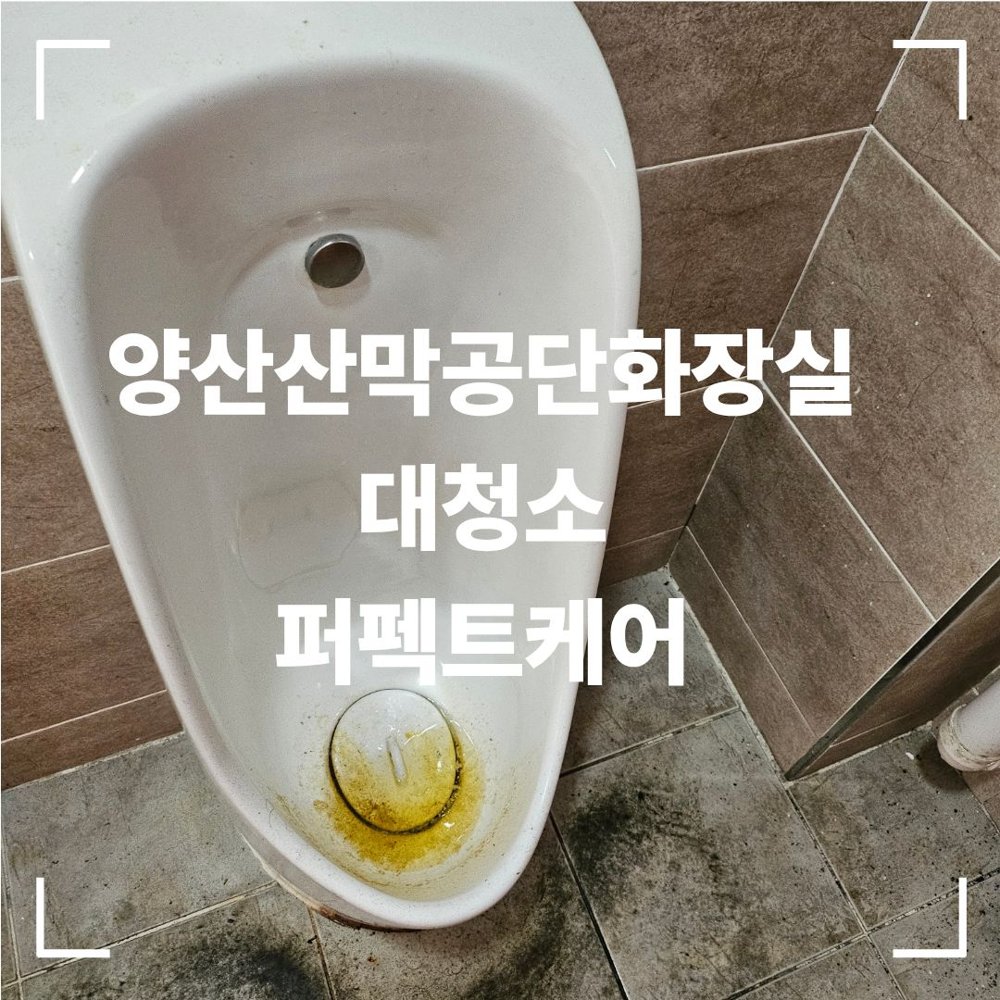
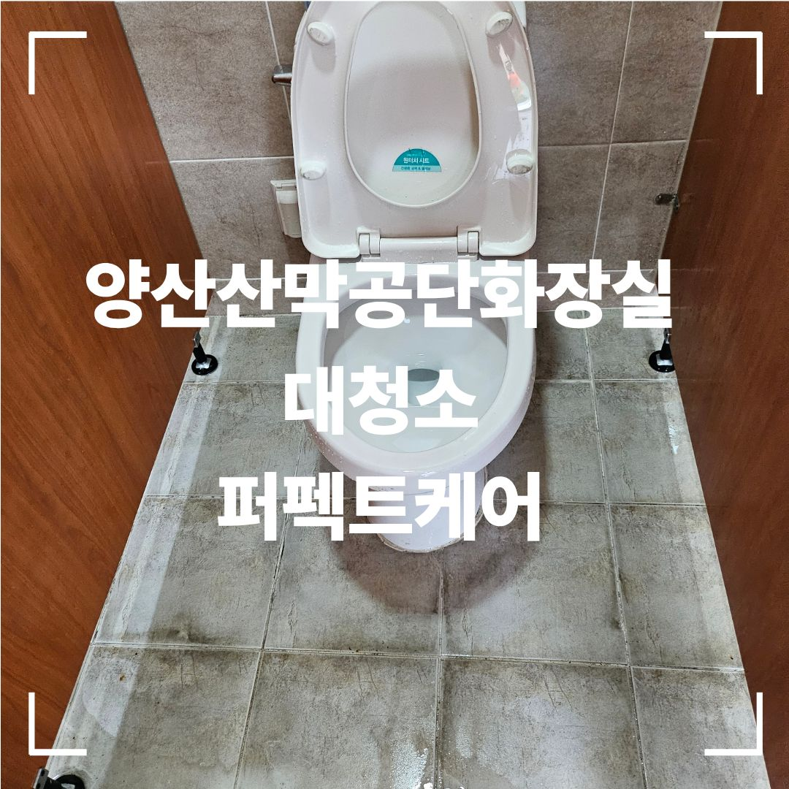
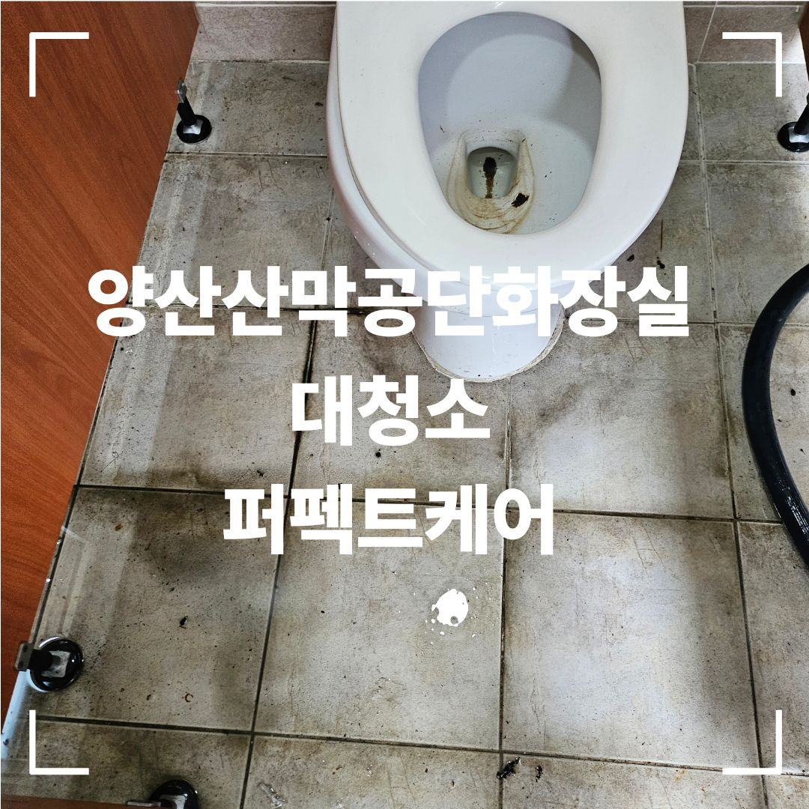
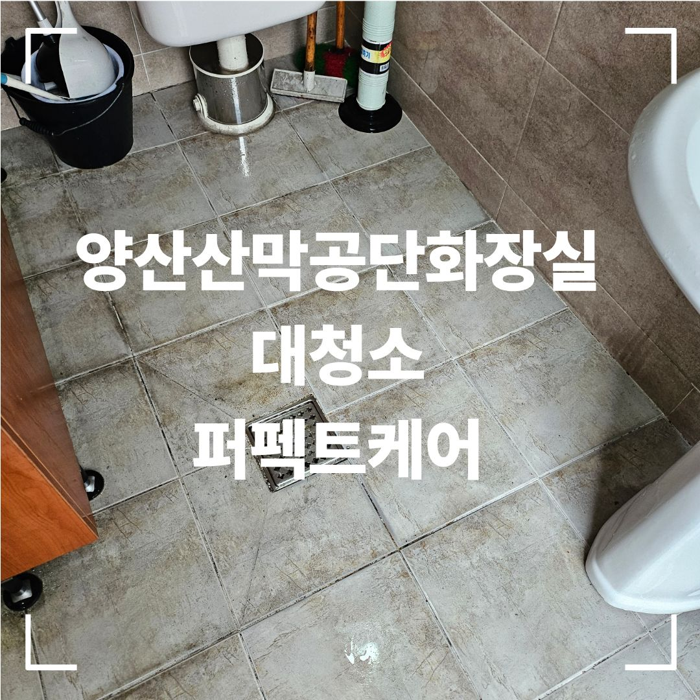
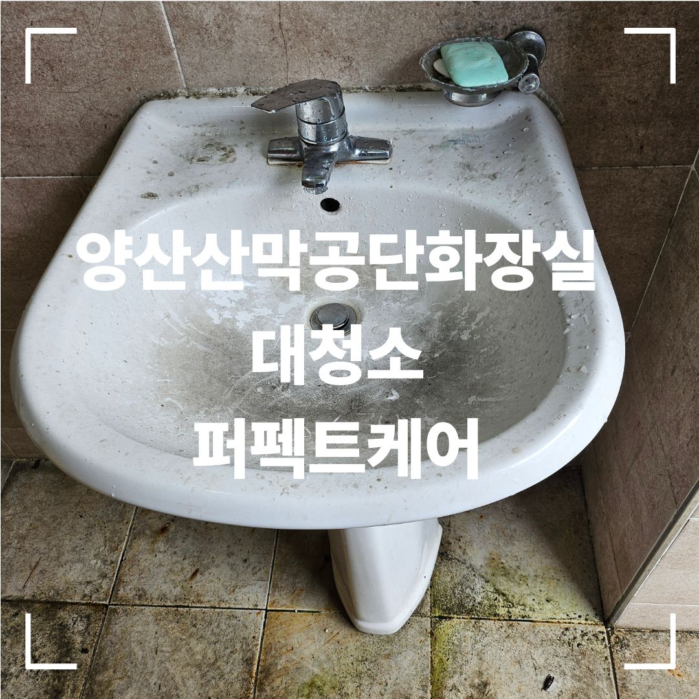
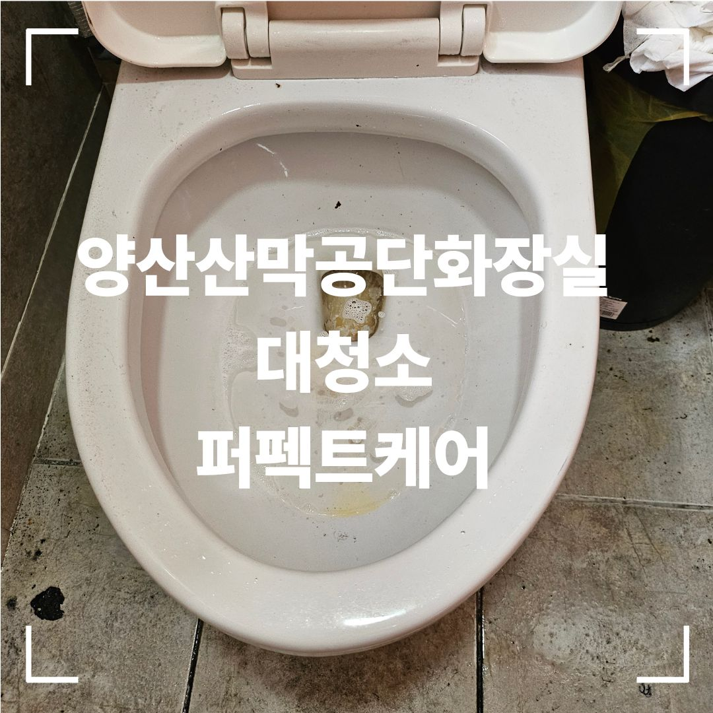
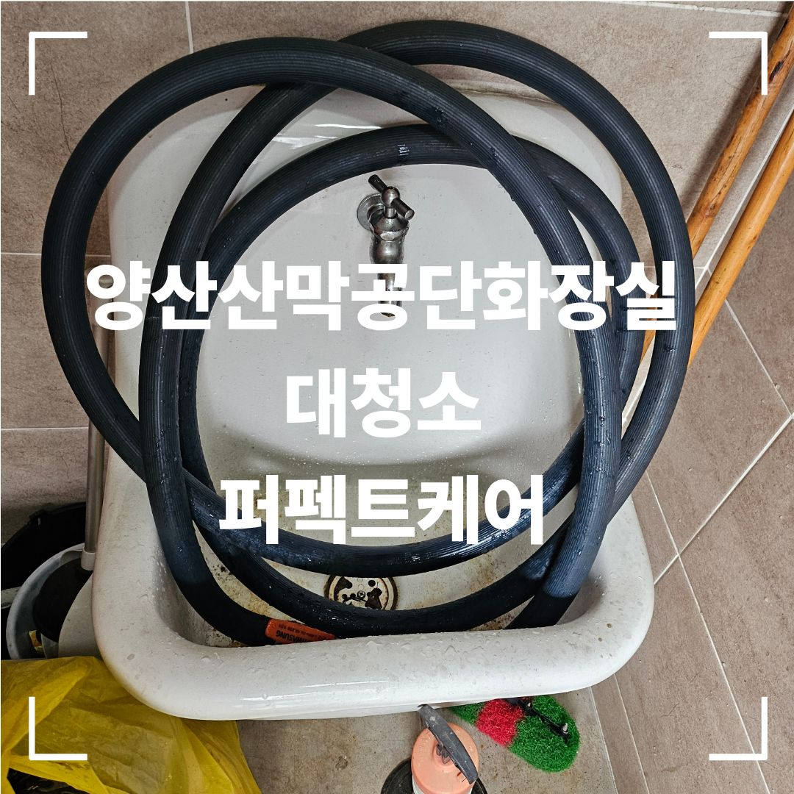

누적 오염이 심한 화장실은 대청소부터 시작하는 것이 좋습니다
사업장 화장실은 사용량이 많아 변기와 소변기, 세면대, 바닥 줄눈, 배수구 주변에 오염이 빠르게 쌓입니다. 오랫동안 관리가 미뤄진 현장은 단순 닦기보다 오염 상태를 확인한 뒤 위생기기와 바닥을 나누어 대청소하는 방식이 효율적입니다.
아래 사진은 퍼펙트케어가 실제 양산 사업장 화장실에서 진행한 작업사례 일부입니다.

청소 전 현장 상태


변기·소변기·세면대·바닥을 구분해 작업합니다
화장실은 부위마다 오염의 성격이 다르기 때문에 한 번에 같은 방법으로 처리하지 않습니다. 위생기기 표면, 바닥 타일, 줄눈, 모서리, 배수구 주변을 구분해 순서대로 정리하고 마지막에 잔여 오염과 물기 상태를 확인합니다.

작업 후 모습



대청소 후에는 정기관리로 유지할 수 있습니다
대청소 이후 사업장 이용량에 맞춰 정기관리 주기를 잡으면 오염이 다시 심해지는 것을 줄일 수 있습니다. 퍼펙트케어는 주 1회부터 주 6회까지 현장 상황에 맞춰 상담합니다.
변기
소변기
세면대
바닥·배수구
양산 화장실 대청소 무료 방문견적
현장 규모와 관리 범위를 확인한 뒤 안내드립니다. 대량건도 문제없습니다.